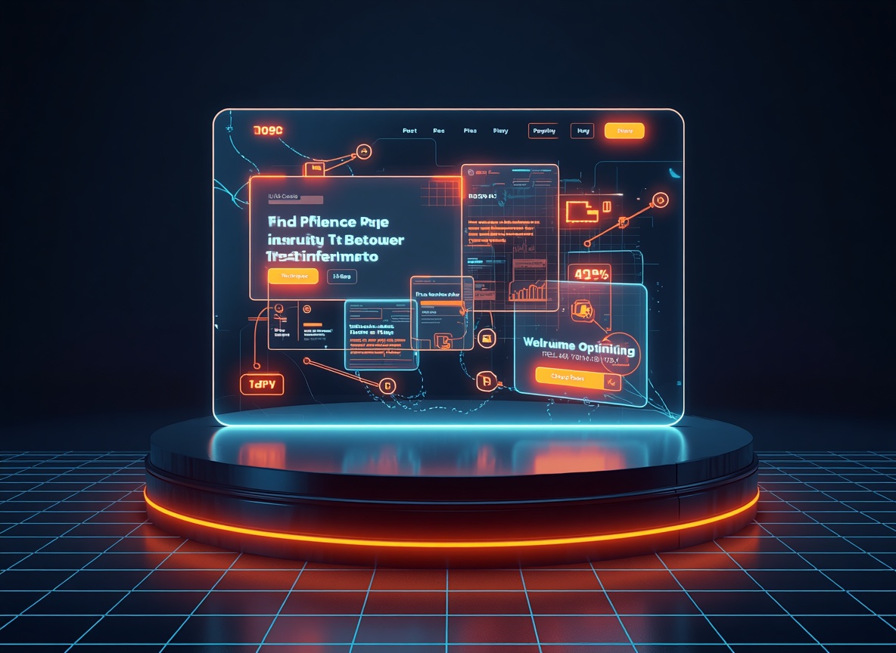
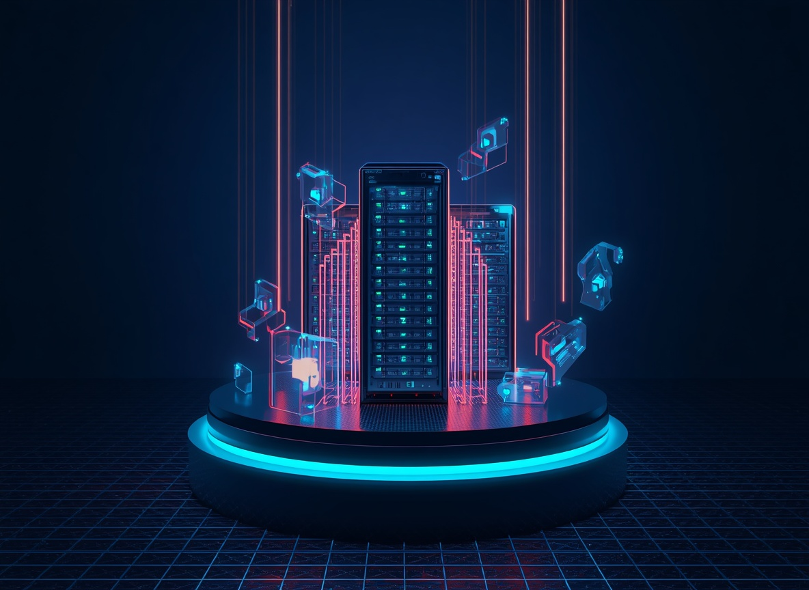

Transformamos o caos em boas memórias
O seu cliente não vai esperar
A IA responde em 2 segundos
Elimine de vez as falhas e a perda de oportunidades comerciais. Substitua a lentidão humana por Agentes de Inteligência Artificial nativos que atendem e resolvem as necessidades dos seus leads 24h por dia, sem fricção ou interrupções.
O Custo Oculto
A demora no WhatsApp mata o faturamento
Cada minuto de lentidão é um cliente a menos no seu caixa.
Seus futuros clientes estão decidindo compras agora. Quando eles enviam mensagens à noite, no almoço ou durante o fim de semana e não encontram uma resposta instantânea, a intenção de compra desaparece em minutos. A concorrência ágil ficará com a receita que deveria ser sua.
Sua equipe comercial de alta performance está exausta e sobrecarregada, consumindo horas preciosas do dia filtrando curiosos e repetindo as mesmas respostas genéricas. Isso infla o seu Custo de Aquisição de Clientes (CAC) e congela o crescimento do seu negócio.
Soluções Corporativas
Nossos pilares estratégicos para a escala do seu negócio
Agentes de IA no WhatsApp
Integração inteligente com modelos avançados para responder dúvidas recorrentes, qualificar leads e agilizar o primeiro contato de forma contínua.
Landing Pages de Conversão
Desenvolvimento de páginas de destino ultravelozes, limpas e focadas na real necessidade do usuário, gerando retenção imediata.
Sistemas Sob Medida
Engenharia customizada para criar painéis gerenciais, CRMs internos e agendas automáticas conectadas de forma segura.
Etapas de Ativação
PROBLEMA RESOLVIDO EM 3 PASSOS SIMPLES
Criação de Páginas
PÁGINAS DE ALTA CONVERSÃO EM MENOS TEMPO

Engenharia de Software
ECOSSISTEMA INTEGRADO SEM PARADAS OU ERROS

Recursos Inclusos
Infraestrutura Limpa e Sob Medida
Desenvolvemos tecnologias nativas leves focadas em segurança de dados e constância operacional. Fornecemos também "relatórios de estatísticas mensais ou bimestrais completos do robô para acompanhamento do retorno.
O Investimento
Faça as contas com honestidade
Alinhamento Estratégico
Pronto para organizar sua operação digital?
Agende um mapeamento gratuito e defina a arquitetura ideal para remover gargalos organizacionais e acelerar seus resultados.